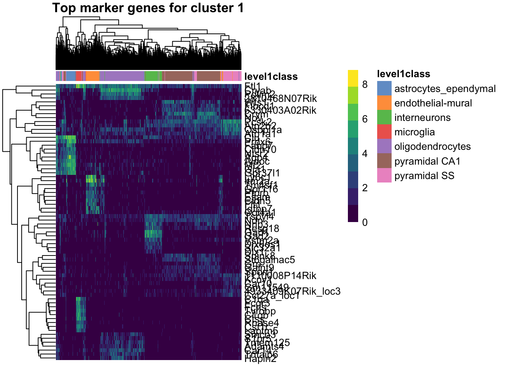

28 Single Cell RNA-seq Analysis
28.1 Introduction
Single-cell RNA sequencing (scRNA-seq) is a powerful technique that allows us to measure gene expression in individual cells rather than bulk tissue samples. This capability has revolutionized our understanding of cellular heterogeneity, developmental processes, and disease mechanisms. Unlike traditional bulk RNA-seq, which provides an average expression profile across all cells in a sample, scRNA-seq reveals the unique molecular signatures of individual cells, enabling identification of distinct cell types, states, and trajectories.
This tutorial will walk through a typical scRNA-seq analysis workflow using R and the Bioconductor ecosystem. We’ll cover data loading, quality control, normalization, dimensionality reduction, clustering, and visualization - the fundamental steps that transform raw sequencing data into biological insights.
28.2 Setup and Data Loading
28.2.1 Loading Essential Libraries
We start by loading three essential R packages for single-cell analysis:
- scRNAseq: Provides access to curated single-cell RNA-seq datasets, making it easy to practice analysis techniques on real data. At the time of writing, it includes more than 50 datasets covering various tissues, organisms, and experimental conditions. See Risso and Cole (2024)
- scran: Contains methods for normalization, feature selection, and clustering specifically designed for single-cell data. See Lun, McCarthy, and Marioni (2016).
- scater: Offers tools for quality control, visualization, and exploratory data analysis. See McCarthy et al. (2017).
Single-cell data has unique characteristics (sparsity, high dimensionality, technical noise) that require specialized tools. These packages form the backbone of the Bioconductor single-cell analysis ecosystem and provide methods that account for the specific challenges of single-cell data.
28.2.2 Exploring Available Datasets
We are going to use the scRNAseq package to access a curated collection of single-cell datasets. This package provides a convenient way to load and explore publicly available datasets that have been processed and annotated.
datasets <- scRNAseq::surveyDatasets()The surveyDatasets() function queries the scRNAseq package database to show all available datasets. This creates a simple table of publicly available single-cell datasets that have been processed and made easily accessible.
Having access to well-curated datasets is useful for learning and benchmarking. These datasets come from published studies and represent different tissues, conditions, and experimental designs, allowing us to practice on real biological data without having to process raw sequencing files.
DataFrame with 10 rows and 15 columns
name version path object
<character> <character> <character> <character>
1 aztekin-tail-2019 2023-12-14 NA single_cell_experiment
2 splicing-demonstrati.. 2023-12-20 NA single_cell_experiment
3 marques-brain-2016 2023-12-19 NA single_cell_experiment
4 grun-bone_marrow-2016 2023-12-14 NA single_cell_experiment
5 giladi-hsc-2018 2023-12-21 crispr single_cell_experiment
6 giladi-hsc-2018 2023-12-21 rna single_cell_experiment
7 macosko-retina-2015 2023-12-19 NA single_cell_experiment
8 messmer-esc-2019 2023-12-19 NA single_cell_experiment
9 ernst-spermatogenesi.. 2023-12-21 cellranger single_cell_experiment
10 ernst-spermatogenesi.. 2023-12-21 emptydrops single_cell_experiment
title description taxonomy_id genome rows
<character> <character> <List> <List> <integer>
1 Identification of a .. Identification of a .. 8355 Xenla9.1 31535
2 [reprocessed, subset.. [reprocessed, subset.. 10090 GRCm38 54448
3 Oligodendrocyte hete.. Oligodendrocyte hete.. 10090 GRCm38 23556
4 De Novo Prediction o.. De Novo Prediction o.. 10090 GRCm38 23536
5 Single-cell characte.. Single-cell characte.. 10090 MGSCv37 30
6 Single-cell characte.. Single-cell characte.. 10090 MGSCv37 27389
7 Highly Parallel Geno.. Highly Parallel Geno.. 10090 GRCm38 24658
8 Transcriptional Hete.. Transcriptional Hete.. 9606 GRCh38 58302
9 Staged developmental.. Staged developmental.. 10090 GRCm38 33226
10 Staged developmental.. Staged developmental.. 10090 GRCm38 32105
columns assays column_annotations
<integer> <List> <List>
1 13199 counts sample,DevelopmentalStage,DaysPostAmputation,...
2 2325 spliced,unspliced celltype
3 5069 counts source_name,age,inferred cell type,...
4 1915 counts sample,protocol
5 24070 counts amplification.batch
6 81408 counts Amp_batch_ID,Seq_batch_ID,tier,...
7 49300 counts cluster
8 1344 counts Source Name,phenotype,single cell quality,...
9 53510 counts Sample,Barcode,Library,...
10 68937 counts Sample,Barcode,Library,...
reduced_dimensions alternative_experiments
<List> <List>
1 UMAP
2
3
4
5
6
7
8 ERCC
9
10
sources
<SplitDataFrameList>
1 ArrayExpress:E-MTAB-7716:NA,PubMed:31097661:NA
2 GEO:GSE109033:NA,GEO:GSM2928341:NA,SRA:SRR6459157:NA
3 GEO:GSE75330:NA,PubMed:27284195:NA
4 GEO:GSE76983:NA,PubMed:27345837:NA
5 PubMed:29915358:NA,GEO:GSE11349:NA
6 PubMed:29915358:NA,GEO:GSE92575:NA
7 GEO:GSE63472:NA,PubMed:26000488:NA,URL:http://mccarrolllab...:2024-02-23
8 PubMed:30673604:NA,ArrayExpress:E-MTAB-6819:NA
9 ArrayExpress:E-MTAB-6946:NA,PubMed:30890697:NA
10 ArrayExpress:E-MTAB-6946:NA,PubMed:30890697:NAEach row represents a different study. The ‘columns’ field shows the number of cells, while ‘rows’ shows the number of genes. This helps you choose datasets appropriate for your computational resources and analysis goals. This little lightweight database is not the richest way to explore datasets, but it is a good starting point. In this tutorial, we will use the ZeiselBrainData dataset, which contains single-cell RNA-seq data from mouse brain tissue (Zeisel et al. (2015)).
The mammalian cerebral cortex supports cognitive functions such as sensorimotor integration, memory, and social behaviors. Normal brain function relies on a diverse set of differentiated cell types, including neurons, glia, and vasculature. Here, we have used large-scale single-cell RNA sequencing (RNA-seq) to classify cells in the mouse somatosensory cortex and hippocampal CA1 region. We found 47 molecularly distinct subclasses, comprising all known major cell types in the cortex. We identified numerous marker genes, which allowed alignment with known cell types, morphology, and location. We found a layer I interneuron expressing Pax6 and a distinct postmitotic oligodendrocyte subclass marked by Itpr2. Across the diversity of cortical cell types, transcription factors formed a complex, layered regulatory code, suggesting a mechanism for the maintenance of adult cell type identity.
sce <- scRNAseq::ZeiselBrainData()What is the sce object? It is a SingleCellExperiment object, which is a data structure specifically designed for single-cell RNA-seq data. As with other Bioconductor data structures, it is built on top of the SummarizedExperiment class (see Figure 28.1), which allows us to store not only the count matrix but also metadata about cells and features (genes).

Printing the sce object gives us a summary of the dataset:
sceclass: SingleCellExperiment
dim: 20006 3005
metadata(0):
assays(1): counts
rownames(20006): Tspan12 Tshz1 ... mt-Rnr1 mt-Nd4l
rowData names(1): featureType
colnames(3005): 1772071015_C02 1772071017_G12 ... 1772066098_A12
1772058148_F03
colData names(9): tissue group # ... level1class level2class
reducedDimNames(0):
mainExpName: gene
altExpNames(2): repeat ERCCThe SingleCellExperiment object contains:
- Assays: The main data matrix (counts) and any additional matrices (e.g., normalized counts).
- Row metadata: Information about genes (e.g., gene names, IDs).
- Column metadata: Information about cells (e.g., cell barcodes, tissue type, experimental conditions).
It can also contain additional information such as dimensionality reductions (e.g., PCA, t-SNE), clustering results, and quality control metrics.
In fact, we are going to add some of these additional information in the next steps. First, we add a new assay with the log-normalized counts, which is a common preprocessing step in single-cell RNA-seq analysis.
sce <- logNormCounts(sce)The logNormCounts() function performs log-normalization of the count data. Raw count data from scRNA-seq experiments contains technical variation due to differences in sequencing depth between cells. Some cells might have been sequenced more deeply than others, leading to higher total counts that don’t reflect true biological differences. Log-normalization addresses this by:
- Size factor normalization: Scaling each cell’s counts by a size factor that accounts for differences in sequencing dept. There are several methods to calculate size factors, but the most common is the median of ratios method, which divides each cell’s counts by the median count for each gene across all cells. This helps to adjust for differences in library size.
- Log transformation: Taking log(count + 1) to stabilize variance and make the data more normally distributed
For each gene g in cell i, the log-normalized expression becomes:
\[log_2(count_{g_i} × {size factor}_{i} + 1)\]
This log transformation is useful because the next steps in the downstream analyses (like clustering and dimensionality reduction) assume that the data is approximately normally distributed (or at least bell-shaped). Log-normalization helps achieve this by reducing the impact of outliers and making the data more suitable for PCA and visualization.
28.3 Dimensionality reduction
Single-cell datasets are extremely high-dimensional - typically containing 15,000-30,000 genes per cell. This creates several challenges: computational complexity, noise dominance, and visualization difficulties. Dimensionality reduction techniques help us identify the most informative patterns in the data while reducing noise and computational burden.
28.3.1 Feature Selection: Identifying Highly Variable Genes
Before applying dimensionality reduction, we need to identify the most informative genes. Highly variable genes (HVGs) are those that show significant variation across cells, indicating they may be biologically relevant. These genes are often more informative for downstream analyses like clustering and visualization.
Not all genes are equally informative for distinguishing cell types. Genes that show little variation across cells (like housekeeping genes) don’t help us identify distinct cell populations. Highly variable genes are more likely to:
- Reflect biological differences between cell types
- Capture developmental or activation states
- Represent responses to environmental conditions
library(scran)
top_var_genes <- getTopHVGs(sce, n=2000)The getTopHVGs() function identifies the top 2000 highly variable genes based on their variance across cells. Choosing a subset of highly variable genes reduces the dimensionality of the dataset while retaining the most informative features for downstream analyses.
The algorithm models the relationship between gene expression mean and variance, then identifies genes that show more variation than expected based on their expression level. This accounts for the fact that highly expressed genes naturally show more variance.
# Visualizing the highly variable genes
library(scran)
dec <- modelGeneVar(sce)
# Visualizing the fit:
fit.mv <- metadata(dec)
plot(fit.mv$mean, fit.mv$var, xlab="Mean of log-expression",
ylab="Variance of log-expression", ylim=c(0, 4))
curve(fit.mv$trend(x), col="dodgerblue", add=TRUE, lwd=2)
points(
fit.mv$mean[top_var_genes], fit.mv$var[top_var_genes],
col="red", pch=16, cex=0.5
)Figure 28.2 shows the mean vs. variance of log-expression for all genes in the dataset, with highly variable genes highlighted in red. The blue curve represents the trend of variance as a function of mean expression, while the red points represent the highly variable genes.
We next proceed to calculating PCA using the subset of highly variable genes. PCA is a linear dimensionality reduction technique that finds the directions of maximum variance in the data. It’s computationally efficient and provides a good foundation for further analysis. The first few principal components capture the most important patterns of variation in the dataset.
PCA is a widely linear dimensionality reduction technique that:
- Reduces dimensionality while preserving variance
- Helps visualize high-dimensional data in 2D or 3D
- Serves as a preprocessing step for other methods like t-SNE or UMAP
- Is computationally efficient and easy to interpret
# Perform PCA on the highly variable genes
set.seed(100) # See below.
sce <- fixedPCA(sce, subset.row=top_var_genes)
reducedDimNames(sce)[1] "PCA"Note that we assign the output of fixedPCA() to the sce object. This function performs PCA on the highly variable genes we identified earlier, reducing the dimensionality of the dataset while retaining the most informative features. Because dimensionality reduction is a common step in single-cell RNA-seq analysis, we can store the PCA results in the reducedDims slot of the SingleCellExperiment object. This allows us to easily access and visualize the PCA coordinates later.
28.3.2 Non-linear Dimensionality Reduction with t-SNE
After PCA, we can apply non-linear dimensionality reduction techniques like t-SNE (t-distributed Stochastic Neighbor Embedding) to visualize the data in 2D or 3D. t-SNE is particularly useful for revealing local structure and separating distinct cell populations.
28.4 Why t-SNE after PCA
This is a two-step approach: 1. PCA first: Reduces noise and computational burden while preserving global structure 2. t-SNE second: Reveals local neighborhood structure and separates distinct cell populations
The runTSNE() function applies t-SNE to the PCA results, creating a 2D representation of the data. The dimred="PCA" argument specifies that we want to use the PCA coordinates as input for t-SNE.
nn.clusters <- clusterCells(sce, use.dimred = "TSNE")
table(nn.clusters)nn.clusters
1 2 3 4 5 6 7 8 9 10 11 12 13 14 15 16 17 18 19 20
152 126 190 286 131 191 63 87 113 328 88 97 155 45 138 40 71 42 61 92
21 22 23 24 25 26 27 28 29 30 31 32 33 34 35 36
54 64 35 62 58 32 27 32 20 16 12 20 28 15 18 16 The clusterCells() function uses graph-based clustering to identify groups of similar cells. Graph-based clustering was popularized by the Seurat package. It builds a nearest-neighbor graph and then finds communities within this graph. The resulting clusters often correspond to distinct cell types or states. The use.dimred = "TSNE" argument specifies that we want to use the t-SNE coordinates for clustering. This is an important choide because t-SNE captures local structure and can reveal distinct cell populations that may not be apparent in the original high-dimensional space. There are other clustering methods available, such as k-means or hierarchical clustering, but graph-based clustering is particularly effective for single-cell data due to its ability to handle complex, non-linear relationships.
28.4.1 Visualizing Cell Types and Clusters
In this particular dataset, we have pre-defined cell type annotations that we can use to color the t-SNE plot. The level1class and level2class columns in the metadata contain these annotations. We can use these annotations to color the t-SNE plot and visualize how well the clustering aligns with known cell types.
We can cluster the cells based on their t-SNE coordinates and visualize the results. The plotReducedDim() function from the scater package allows us to create a scatter plot of the t-SNE coordinates, coloring the points by their cluster assignments or cell type annotations.
library(scater)
colLabels(sce) <- nn.clusters
plotReducedDim(sce, "TSNE", colour_by="level1class")We can also visualize the second level of cell type annotations.
plotReducedDim(sce, "TSNE", colour_by="level2class")And add additional metadata such as tissue type to the plot. The shape_by argument allows us to differentiate points by another categorical variable, such as tissue type.
plotReducedDim(sce, "TSNE", colour_by="level1class", shape_by="tissue", )28.5 Finding Marker Genes
Marker genes are genes that are differentially expressed in a specific cell type or cluster compared to others. Identifying marker genes helps us understand the molecular characteristics of each cell type and can provide insights into their functions.
To find marker genes, we can use the findMarkers() function from the scran package. This function performs pairwise differential expression analysis between clusters or cell types. We can specify the clusters we want to compare and the method for calculating differential expression.
markers <- findMarkers(sce,
groups=as.numeric(as.factor(colData(sce)$level1class)), pval.type="all",
direction="up", subset.row=top_var_genes, test="t")The findMarkers() function identifies genes that are significantly upregulated in each cluster compared to all other clusters. The pval.type="all" argument specifies that we want to calculate p-values for all comparisons, and the direction="up" argument indicates that we are interested in genes that are upregulated in the specified clusters.
The subset.row=top_var_genes argument restricts the analysis to the highly variable genes we identified earlier, which are more likely to be informative for distinguishing cell types.
The resulting markers object is a list where each element corresponds to a cluster and contains the differential expression results for that cluster. We can visualize the top marker genes for each cluster using a heatmap.
Take my word for it that we can visualize the top marker genes for each cluster using a heatmap. This allows us to see which genes are most strongly associated with each cluster and how they differ across clusters.
# visualize the top marker gene for cluster 1 in a violin plot(
library(scater)
top_marker_genes_for_all_clusters = lapply(markers, function(x) {
return(head(rownames(x), 10))
})
plotHeatmap(sce, features=unique(unlist(top_marker_genes_for_all_clusters)),
cluster_rows=TRUE, cluster_cols=TRUE, show_colnames=FALSE,
main="Top marker genes for cluster 1",
color_columns_by="level1class")
28.6 Interactive Visualization with iSEE
The Interactive SummarizedExperiment Explorer (iSEE) is a powerful tool for exploring single-cell data interactively. It allows us to visualize and interact with the data in real-time, making it easier to explore complex datasets and identify patterns.
A key component of iSEE is the SingleCellExperiment object, which serves as the data container for single-cell RNA-seq data. iSEE provides a user-friendly interface for exploring the data.
To use iSEE, we first need to install the iSEE package and then launch the iSEE app.
# Install iSEE package if not already installed
iSEE::iSEE(sce)The iSEE() function launches the iSEE app, which provides an interactive interface for exploring the SingleCellExperiment object.
You may want to play with a few genes to see how they are expressed across the different clusters. You can also explore the metadata associated with the cells, such as tissue type, cell type annotations, and quality control metrics. The set of “marker genes” we identified earlier can also be visualized in iSEE, allowing us to see how these genes are expressed across different clusters and cell types.
For cluster 1, the marker genes are:
Aqp4
Cldn10
Clu
Aldoc
Ntsr2
Mt2
Fabp7
Gja1
Gpr37l1
Prdx6 See the
28.7 Bonus: Working with 10x Genomics Data
In the previous sections, we used a curated dataset from the scRNAseq package. However, many real-world single-cell RNA-seq datasets come from 10x Genomics platforms, which produce data in specific formats. In this section, we’ll cover a hypothetical workflow for loading and processing raw 10x Genomics data using R.
28.7.1 Understanding 10x Genomics Output Formats
10x Genomics Cell Ranger produces several output formats:
-
Matrix Market format (
.mtxfiles): Sparse matrix format with separate files for the matrix, gene names, and cell barcodes -
HDF5 format (
.h5files): A single compressed file containing all the data - Filtered vs. unfiltered: Cell Ranger provides both versions - filtered contains only cells that pass basic quality filters
28.7.2 Loading 10x Data from Matrix Market Files
# Loading from standard 10x output directory
# This assumes you have a directory with:
# - matrix.mtx.gz (or matrix.mtx)
# - features.tsv.gz (or genes.tsv.gz for older versions)
# - barcodes.tsv.gz
library(DropletUtils)
library(SingleCellExperiment)
# Method 1: Using DropletUtils (recommended)
sce_10x <- read10xCounts("path/to/10x/output/", col.names = TRUE)
# Method 2: Using Seurat (if you prefer the Seurat ecosystem)
# library(Seurat)
# seurat_obj <- Read10X("path/to/10x/output/")
# sce_10x <- as.SingleCellExperiment(CreateSeuratObject(seurat_obj))What we’re doing: The read10xCounts() function from DropletUtils reads the three files that comprise 10x output and creates a SingleCellExperiment object. The col.names = TRUE parameter ensures that cell barcodes are used as column names.
Why DropletUtils: This package is specifically designed for handling droplet-based single-cell data (like 10x Genomics). It includes specialized functions for:
- Reading 10x formats efficiently
- Distinguishing empty droplets from cells
- Handling ambient RNA contamination
- Quality control specific to droplet-based methods
28.7.3 Loading from HDF5 Files
# For HDF5 format files
library(rhdf5)
# Method 1: Using DropletUtils
sce_h5 <- read10xCounts("path/to/sample.h5", type = "HDF5")
# Method 2: Direct HDF5 reading (more control)
h5_file <- "path/to/sample.h5"
gene_info <- h5read(h5_file, "matrix/features")
barcodes <- h5read(h5_file, "matrix/barcodes")
matrix_data <- h5read(h5_file, "matrix/data")
# Additional processing needed to reconstruct sparse matrixWhat we’re doing: HDF5 files are more convenient as they contain all information in a single file. The type = "HDF5" parameter tells the function to expect this format instead of separate matrix files.
When to use H5 files:
- Convenience: Single file is easier to manage and transfer
- Speed: Often faster to read than multiple compressed files
- Storage: More efficient storage, especially for large datasets
28.7.4 Essential Quality Control After Loading Raw Data
# Add mitochondrial gene information
library(scuttle)
is.mito <- grepl("^MT-", rownames(sce_10x)) # Human mitochondrial genes
# For mouse data, use: is.mito <- grepl("^mt-", rownames(sce_10x))
# Calculate per-cell QC metrics
sce_10x <- addPerCellQC(sce_10x, subsets = list(Mito = is.mito))
# Calculate per-gene QC metrics
sce_10x <- addPerFeatureQC(sce_10x)
# View the QC metrics
colnames(colData(sce_10x))What we’re doing: We’re calculating quality control metrics that are essential for raw 10x data:
- Mitochondrial genes: High mitochondrial gene expression often indicates dying cells
- Per-cell metrics: Total counts, number of detected genes, mitochondrial percentage
- Per-gene metrics: How many cells express each gene
Why QC is crucial for raw data: Unlike curated datasets, raw 10x data contains:
- Empty droplets: Droplets that captured ambient RNA but no cells
- Dying cells: Cells with compromised membranes
- Doublets: Droplets containing multiple cells
- Low-quality cells: Cells with very few detected genes
28.7.5 Filtering Low-Quality Cells and Genes
# Visualize QC metrics
library(scater)
plotColData(sce_10x, x = "sum", y = "detected", colour_by = "subsets_Mito_percent")
# Set filtering thresholds (these are examples - adjust based on your data)
# Filter cells
high_mito <- sce_10x$subsets_Mito_percent > 20 # Remove cells with >20% mitochondrial reads
low_lib_size <- sce_10x$sum < 1000 # Remove cells with <1000 total counts
low_n_features <- sce_10x$detected < 500 # Remove cells with <500 detected genes
# Filter genes (remove genes expressed in very few cells)
low_expression <- rowSums(counts(sce_10x) > 0) < 10 # Expressed in <10 cells
# Apply filters
sce_filtered <- sce_10x[!low_expression, !(high_mito | low_lib_size | low_n_features)]
# Check how many cells and genes remain
dim(sce_10x) # Before filtering
dim(sce_filtered) # After filteringWhat we’re doing: We’re applying filters to remove low-quality cells and rarely expressed genes. The specific thresholds should be adjusted based on your dataset characteristics.
Understanding the filters:
- Mitochondrial percentage: Cells with high mitochondrial gene expression are likely dying
- Library size: Total number of UMIs per cell - very low values suggest poor capture
- Number of features: How many different genes are detected - very low values suggest poor quality
- Gene expression frequency: Genes expressed in very few cells are often noise
Critical considerations:
- Thresholds are dataset-dependent: What works for one experiment may not work for another
- Biological vs. technical variation: Some cell types naturally have different RNA content
- Visualization first: Always plot your QC metrics before setting thresholds
28.8 Further Reading and Resources
For more in-depth information on single-cell RNA-seq analysis, consider the following resources:
- The Orchestrating Single-Cell RNA-seq Analysis book provides a comprehensive guide to single-cell RNA-seq analysis using Bioconductor.
- The Seurat package documentation offers extensive tutorials and vignettes for single-cell analysis in the Seurat ecosystem.